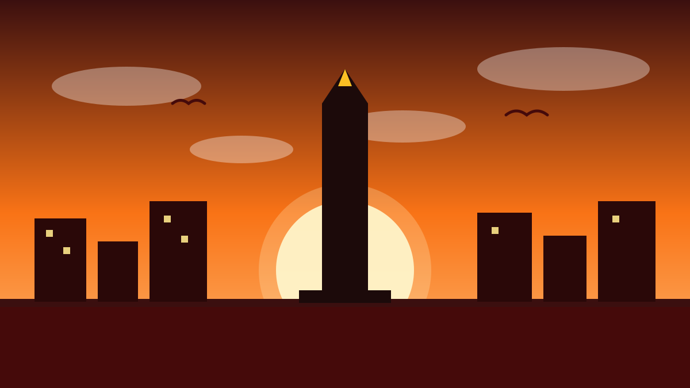

1 / 6

🏛️ NASIONAL
Dua pabrik nikel RI makan listrik lebih dari se-Singapura
Klaim langsung dari CEO Danantara, Rosan Roeslani, kemarin. Geser buat liat angkanya →
2 / 6
⚡
Angkanya gila: 15,9 GW vs 13,1 GW
Kapasitas listrik di kawasan IWIP (Weda Bay, Maluku Utara) tercatat 7,1 gigawatt, sementara IMIP (Morowali, Sulawesi Tengah) 8,8 gigawatt. Totalnya 15,9 GW.
Bandingkan dengan total kapasitas listrik industri Singapura yang cuma 13,1 GW. Kata Rosan: "Jauh lebih besar dari seluruh pemakaian total listrik di Singapura."
3 / 6
🏭
Diungkap di acara groundbreaking Rp180 triliun
Klaim itu disampaikan Rosan saat groundbreaking ekosistem hilirisasi nikel dan pelepasan ekspor perdana baterai kendaraan listrik di IWIP, Kamis (8/10/2026).
Presiden Prabowo meresmikan 11 proyek hilirisasi senilai US$10,2 miliar (sekitar Rp180 triliun): 4 proyek mulai komersialisasi dan 7 groundbreaking pabrik baru.
4 / 6
🔋
Isi proyeknya: rantai baterai EV lengkap
Yang mulai ekspor perdana: produk olahan nikel MHP, bahan baku baterai NMC dan LFP, aluminium elektrolitik, sampai komponen alat berat berbasis listrik.
Targetnya bikin Indonesia jadi rantai pasok global baterai EV — dari tambang sampai daur ulang baterai, semuanya di dalam negeri.
5 / 6
💰
Skalanya: 52 tenant, 117 ribu pekerja
IWIP dihuni 52 perusahaan penyewa termasuk raksasa seperti Glencore dan Trafigura, dengan total investasi US$27 miliar sejak 2018 dan 117 ribu tenaga kerja.
Ekspor IWIP US$11 miliar; gabungan dengan IMIP jadi US$28 miliar alias sekitar 10% dari total ekspor Indonesia. Tapi ada catatan: riset Ember menyebut listrik smelter nikel 94%-nya masih dari batu bara.
6 / 6
🤔
Efeknya ke lo apa?
Rantai baterai EV lengkap di RI artinya harga motor/mobil listrik bisa makin terjangkau ke depannya — plus peluang kerja di industri hilir yang terus dibuka.
Tapi jadi PR bareng: industri sebesar ini harusnya pelan-pelan pindah ke energi bersih, bukan terus ngandelin batu bara. 🌱